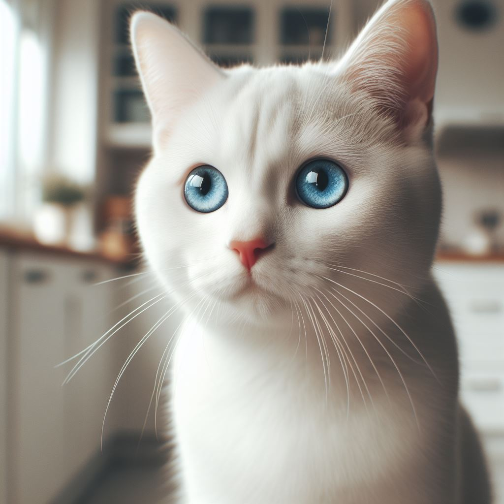
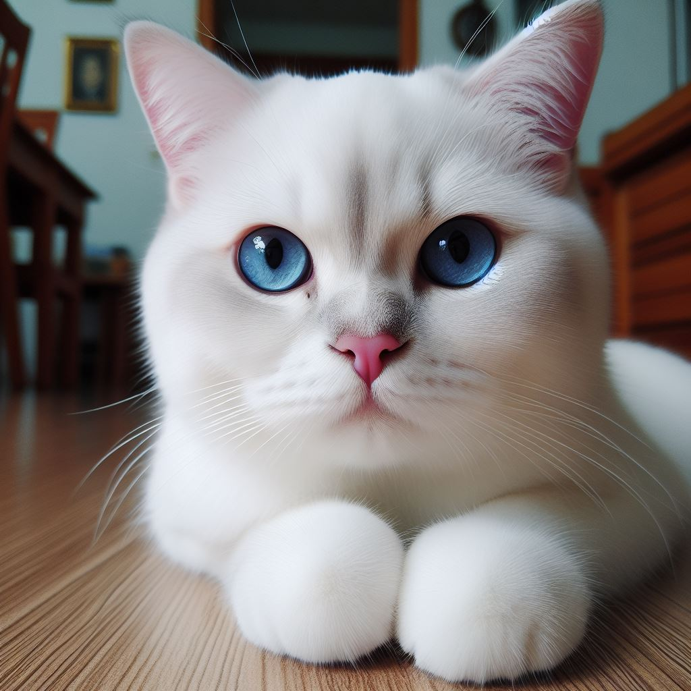
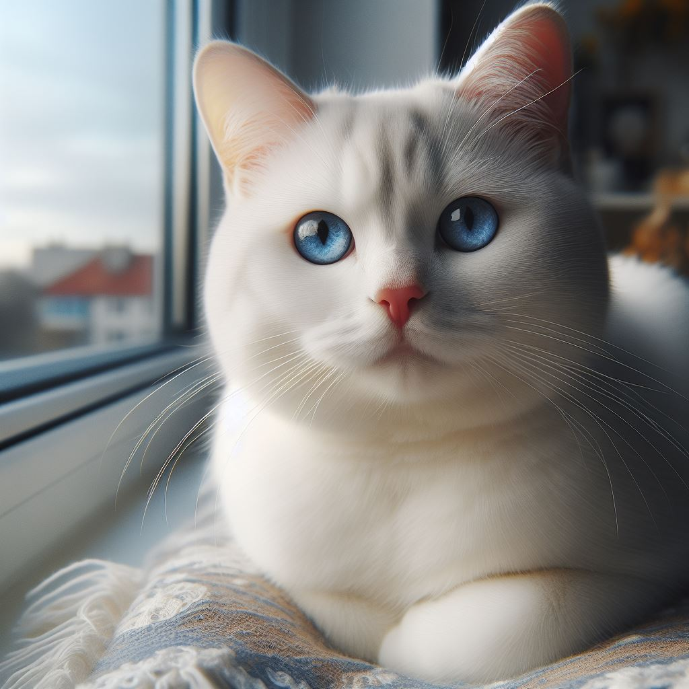

La vida de Glottis
Glottis, un gato blanco con ojos azules nacido en enero de 2009 en la hermosa ciudad de Córdoba, Argentina, comenzó su vida como una adorable bola de pelusa. Su dueño, el apasionado amante de los gatos y ferviente seguidor del tango, Sergie Code, lo acogió en su hogar desde el principio.
Desde joven, Glottis mostró un amor innato por la música y el baile, particularmente por el tango, que resonaba en los rincones de la casa de Sergie. Pronto, el gato blanco se convirtió en un espectador asiduo de las noches de tango, deleitándose con los movimientos gráciles de los bailarines y sumergiéndose en la atmósfera apasionada de la música. La vida de Glottis dio un giro inesperado cuando la familia Code decidió mudarse a la bulliciosa ciudad de Buenos Aires en busca de nuevas oportunidades. Glottis se adaptó rápidamente a la vida en la capital argentina, donde su amor por el tango y la cultura local floreció aún más.
Con el tiempo, Glottis desarrolló una fascinación única por el dinero. Le encantaba jugar con billetes y monedas, y a menudo se le podía encontrar "contando" sus tesoros en una esquina acogedora de la casa. Aunque su obsesión por el dinero no estaba motivada por la avaricia, sino por una curiosidad juguetona y un deseo de participar en la vida cotidiana de Sergie. La vida de Glottis dio un giro inesperado cuando la familia Code decidió mudarse a la bulliciosa ciudad de Buenos Aires en busca de nuevas oportunidades. Glottis se adaptó rápidamente a la vida en la capital argentina, donde su amor por el tango y la cultura local floreció aún más.